2014 At a Glance
QTM Members
2039
New Team Members
Three
Queens Residents on Team*
4 of 5
*No worries, we still love our Brooklynite
Amount Fundraised
$1.3M
New Board Members
Eight
Volunteer Committee Chairs
Ten
Amount Raised at Bash
$100K+
Number of Events Hosted
Twelve
Access Code Graduate Salary
$72,947
Average from 6-month post-graduation survey
- 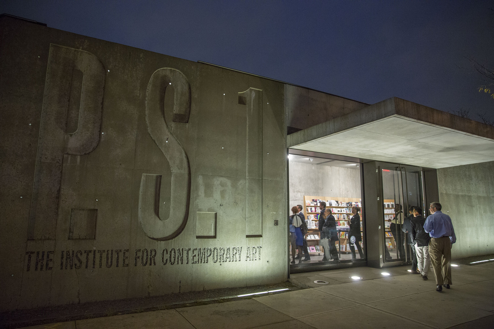
- 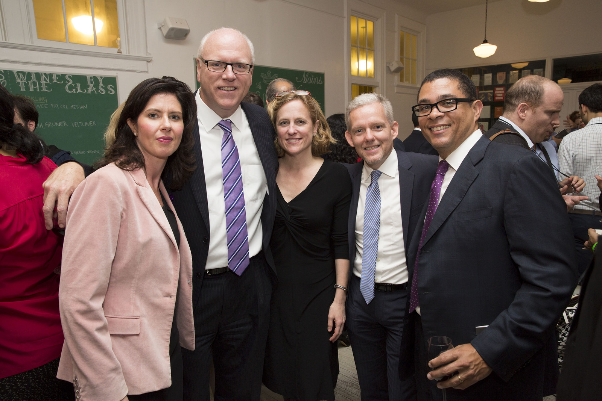
- 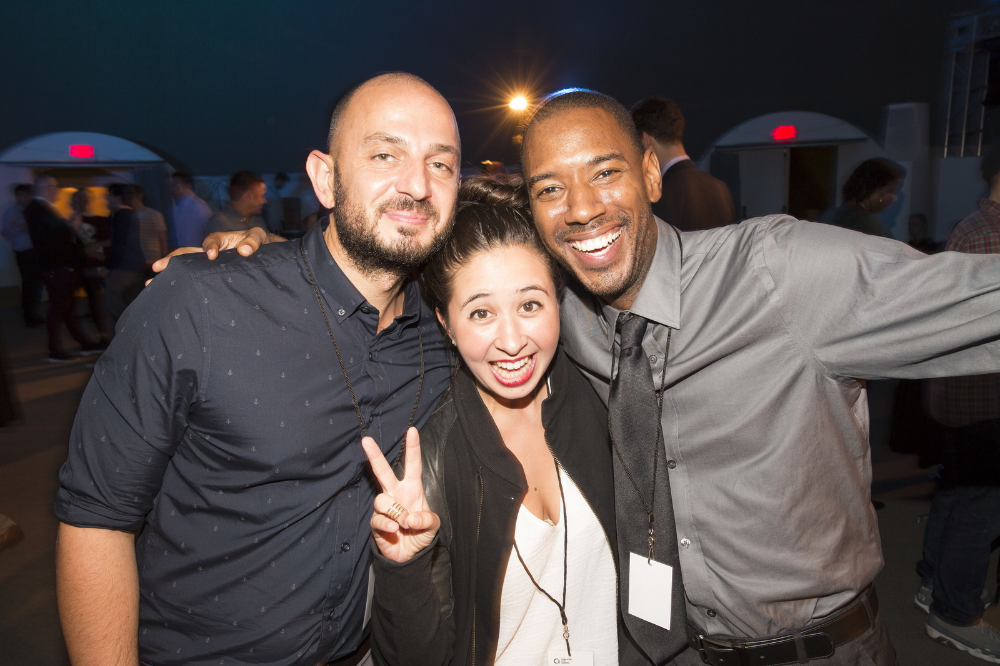
- 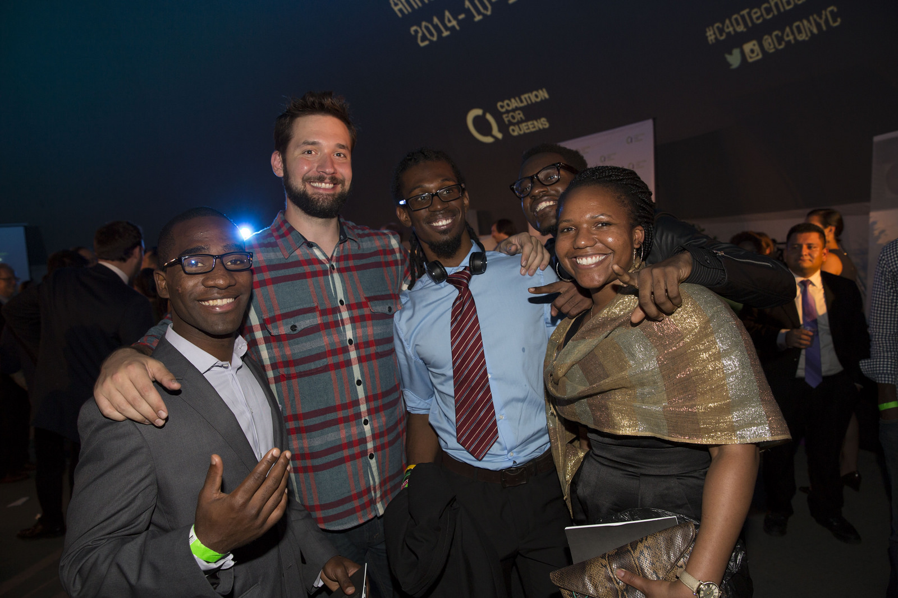
- 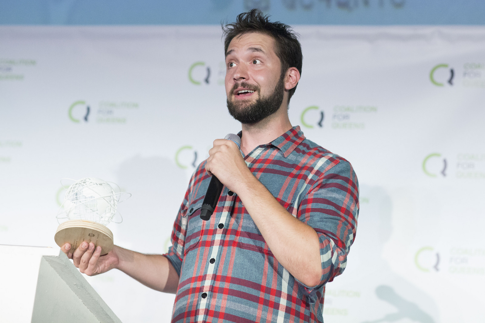
- 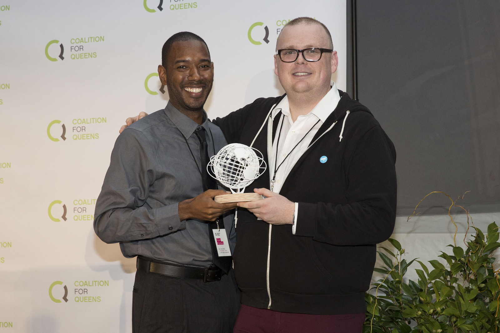
Over 300 technologists, entrepreneurs, civic leaders, and Queens residents joined us our second Annual Gala to celebrate our growing tech community. Thanks to your contributions and support from our sponsors, we raised more than $100,000 to go towards increasing opportunity in Queens!
The 2014 Queens Tech Meetup family of startup demoes and presenters


Hackers of All Ages
We hosted the Queens Build Day for BigApps, a city-wide tech competition that empowers the sharpest minds in tech, design, and business to solve NYC's toughest challenges. Over 150 people from all over NYC came to C4Q HQ in order to build their products and take part in the first ever hackathon in Queens.
NYC Tech Talent Summit
Working with over 75 organizations focused on workforce development, we helped organize the inaugural Tech Talent Summit, helping to shape NYC's future investments in education and the tech sector.
Smithsonian APA Wiki-a-thon
We were the New York City host for this national Smithsonian event, the first Wikipedia edit-a-thon dedicated to Asian Pacific American content. Washington D.C., Austin, San Diego, Los Angeles. bringing voice by stories and information on the web
Learn More
Policy & Advocacy
- 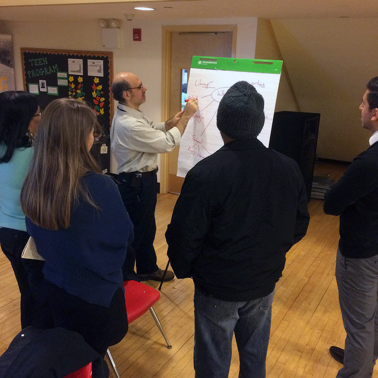
- 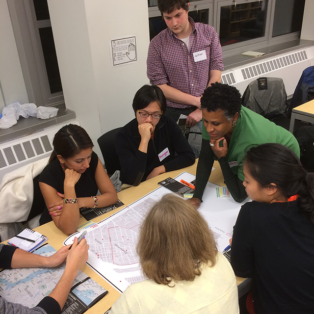
- 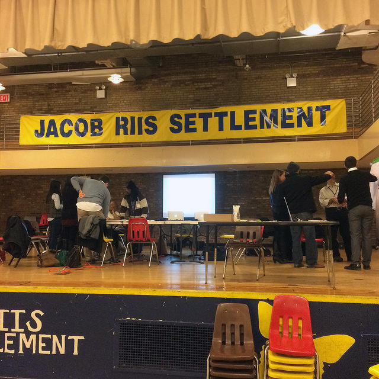
Public Sessions
The Queens Tech Strategic Plan is a community-based initiative that aims to lay the foundations for the continued long-term growth of tech in Queens.
We hosted three Public Sessions in 2014 on themes related to the tech ecosystem to better understand the different needs of the community, business, and residents.
C4Q EDU
Our volunteer-driven workshops led by industry experts provide opportunities for community members to learn new skills and share expertise. C4Q EDU creates a supportive environment for our community to develop technical skills.
Learn More
Web & Python
Led by C4Q Education Chairs Alex & Greg
Access Code 1.0 Updates
Talent + Opportunity = Amazing Things
We knew that our Access Code 1.0 graduates had passion, dedication, and hustle but we are amazed at how much they have been able to achieve in such a short period of time. We are thrilled to be able to share in their success and look forward to the great things to come.
Where Our Graduates Work
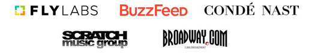Access Code Graduate
"
Access Code was a phenomenal experience for me, and I’m very grateful for the opportunity I had to be a founding student. It catapulted me into a career in tech... [the] experience has also given me the confidence to pursue more skills...
Eli Bierman, Access Code 1.0
New Talents and Skillsets
We welcomed new members to the team.
We're growing an interisciplinary team of talented individials joined by our shared passion for increasing economic opportunity for all New Yorkers. Not only do our new teammates add a breadth of skillsets to our toolbox, they bring great energy and enthusiasm to our work.

Our team is growing, and we're looking to hire the best and brightest to help us achieve our mission.
Join Our Team
Setting the Foundations
We seek to continually improve as we build our programs, our team, and our organization.
C4Q is entering its fourth year as an organization, but we're still young and eager to continue learning. Focusing on building our systems and metrics in 2014, we started to codify our values, culture, and goals, an important step in establishing our strategy for growing a healthy organization.
Discovered that we all like 90s music, OJ with pulp--oh, and we're all summer babies. We also have a knack for "winning" board games & cooking great meals. #teamretreat #staffbonding
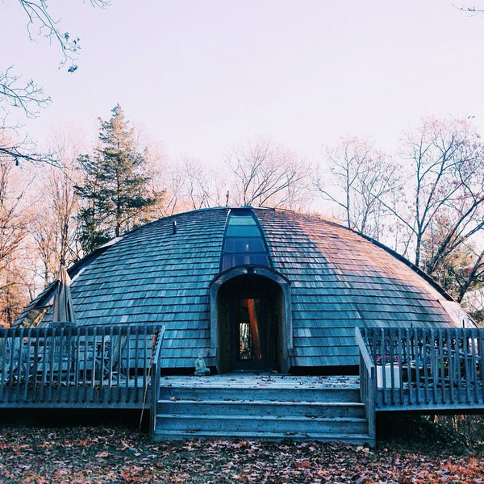 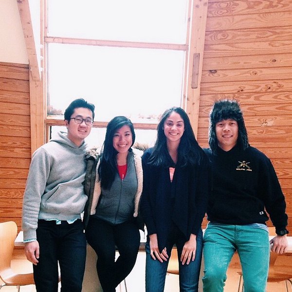Photo credit: @mteatran
Board of Directors
Seeking the leadership and experience of experts across various disciplines, we expanded our Board of Directors in 2014.
2013
Five
-
New Directors
- Adam Belanich
Co-founder, Joyride Coffee
- Jessica Milner
Covington & Burling
- Elias Roman
Google; Co-founder & CEO of Songza
2014
Thirteen
- Michael Borofsky
SVP of MacAndrews & Forbes
- Jennifer Hensley
Executive Director, ABNY
- Soo Kim
Chief Investment Officer, Standard General
- Andrew Kirby
Former President of Plaxall
- Sam Mandel
Partner, Betaworks
- Josh Miller
Product at Facebook; Founder of Branch
- Carl Schuman
StormHarbour Securities
- Marleen Vogelaar
Co-founder & former CSO of Shapeways
New Directors
- Elias Roman elected as Board Chair and Mike Borofsky elected as Vice Chair
- Congrats to Elias and Queens tech company Songza on being acquired by Google in summer 2014
- Josh Miller's startup Branch acquired by Facebook in early 2014
- Adam Belanich named Forbes' 30 Under 30
Volunteer Committee
We established a Volunteer Chair Committee to help lead new initiatives and offer their expertise.

Tech & Design
Dion Ridley
CTO of Merus
Dan Vingo
Software Engineer

Marketing
Rhoni Blankenhorn
Project Coordinator at LeadDog Marketing
Veronica Chan
Brand Communications at OXO
Simon Yi
Director of Marketing at Skift

Events
Dan Calamai
Director of Implementation Services at Operative
Aaron Cohen
Venture Director at Fueled

Fundraising
Jeanne Su
Corporate and Foundation Relations Officer at Prep for Prep

Education
Gregory Gundersen
Bioinformatician at Mount Sinai
Alex Samuel
Software Engineer

Partnerships
Derek Kan
Director of Product Management at Annalect Group
www.c4q.nyc
We love our City and now our web address shows it.
In addition to launching our redesigned website, we were proud to represent Queens as a founding member of the newly created .NYC top-level domain, the official web address for New Yorkers.

Support
We are especially thankful for and humbled by the support we received this past year.
Working with leading poverty fighting organizations and foundations like Robin Hood, the New York Community Trust, and Arbor Brothers, we believe that our work can be even more impactful and provide opportunity to more New Yorkers.
New Supporters in 2014
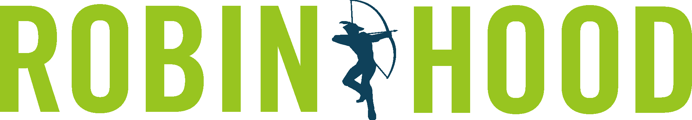 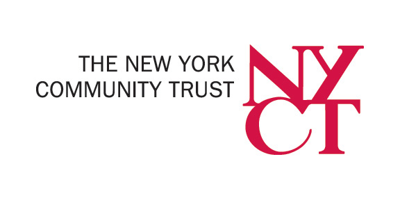 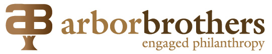 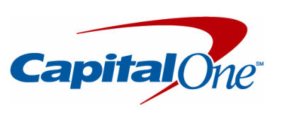
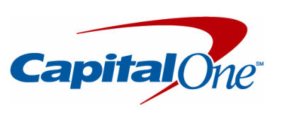
Financials
Funds Received
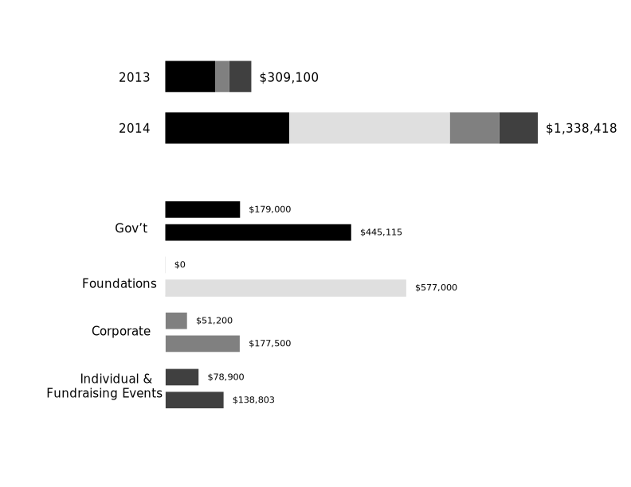Access Code 2.0
We want to create new pathways that expand and strength the tech ecosystem. This will help the tech industry grow and increase income mobility for more New Yorkers.
Policy & Advocacy
Innovation District
Thank You
A special thanks to the talented team members, advisors, and industry leaders for helping us grow this past year.

Image Credit: Kai Song-Nichols, 2014 Summer Intern
Join Our Newsletter to Stay Updated